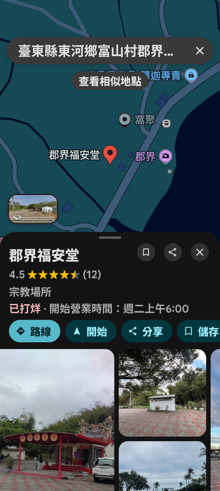

荒野保護協會台東分會資深志工 ‧ 「綠光食物森林學校」創辦人。在都蘭山腳下實踐樸門永續農業（Permaculture）數十年。每月第一個週日，秉持「無償、自願、分享」的精神，帶著大家一草一木地認識海岸山脈的生態密碼。
十月適逢節氣「寒露」前夕，海岸山脈由夏入秋，步道上的生命正悄悄換上秋季的新裝與生存策略。
進入秋天，步道兩側的普刺特草熟透呈現迷人的紫黑色小巧漿果；野牡丹與月桃也正經歷果實成熟期。沿途觀察植物如何運用鮮豔的果色吸引鳥獸採食，藉此將生命種子散布到整座海岸山脈。
十月初正是台灣東部猛禽與過境候鳥南飛的高峰期。都蘭山登山口與觀景平台視野遼闊，向東可飽覽整個太平洋與綠島。在秋日晴空下，仰望天際經常有機會捕捉到灰面鵟鷹或赤腹鷹乘著氣流翱翔的壯麗身影。
都蘭山海拔 1,190 公尺，長年受太平洋水氣滋潤，形成獨特的「暖溫帶霧林帶」。高聳樹冠上附生著宛如空中花園的台灣山蘇、崖薑蕨與厚苔蘚，就像一塊龐大的綠色海綿，將降雨與雲霧牢牢鎖在山林中，孕育都蘭清澈溪流。
定點觀察不只是靜態看景，更是一場尊重自然的倫理實踐。我們將在施炳霖老師引導下，觀察林務局與志工依地勢就地取材的手作階梯工法，並隨手撿拾山徑零星垃圾，體會「留下的是腳印、帶走的是感動」的敬山之道。
放慢腳步，感受與大自然同頻呼吸的悠閒時光
夥伴初相見、行前叮嚀、協調汽車共乘併車，減少山區排碳與停車空間負擔。
車隊沿產業道路蜿蜒上行約 4 公里，登上海拔約 590 公尺的都蘭山步道登山口停車場。
遠眺太平洋與綠島，施炳霖老師引導今日十月定觀主題、安全注意事項與熱身。
慢速漫步前行約 1.5 ~ 2 公里，細緻觀察初秋果實、附生蕨類、候鳥鳴聲與林下土壤生機。
在林間平台休憩，享用自備乾糧與茶水，大家圍坐分享今日觀察心得與新發現。
整理隨身行囊，漫步回登山口，原車併車返回郡界福安堂，圓滿結束充實的十月定觀！
點擊方框可勾選已準備物品，確保裝備齊全無遺漏！
請務必提早於 08:20 抵達集合廣場，08:30 準時併車出發！
台東縣東河鄉都蘭村郡界（台11線約 150.5K 處）

1. 保險自理聲明： 本活動由「荒野保護協會台東分會」資深志工施炳霖老師與「都蘭共學堂」自發推廣之公益常態定點觀察，完全免費且未向參與者收取任何費用，現場亦無代辦任何意外平安保險。參與者請評估個人體能狀況與健康狀態，安全請自行負責；如需保障，強烈建議依個人需求提早自行投保一日國內旅遊平安保險。
2. 防滑與吸血螞蝗防護： 都蘭山為終年多霧多濕之林道，木棧道與卵石常有青苔，請絕對勿穿著拖鞋、涼鞋或平底無抓地力之休閒鞋。步道偶有吸血螞蝗出沒，請著長筒厚襪並將長褲管塞入襪中，隨身攜帶防蚊液或食鹽水以策萬全。
3. 敬山與無痕山林（LNT）： 山林是野生動植物的家園，踏查過程中嚴禁折損花木、捕捉昆蟲或帶走任何自然物；個人製造的垃圾（含衛生紙、果皮）請務必全數帶下山。
4. 天候應變機制： 如遇中央氣象署發布颱風警報、東部豪大雨特報或花東地區地震災情，為顧及行車與山道安全，活動將自動取消或延期，敬請隨時注意共學堂首頁或 LINE 公告。
非常適合！定點觀察不是攻頂登峰，全程步調緩慢，主要在步道前段約 1.5 ~ 2 公里進行微距解說與植物探索，隨走隨停。只要穿妥防滑雨鞋、能自理平路健行約 3 小時者，長輩與國小學童皆能輕鬆參與。
可以！您可以搭乘公車或騎機車抵達「郡界福安堂廣場」，我們在現場會協助協調有開車的熱心夥伴進行併車共乘，一同上山，下山時亦會併車載回郡界。
完全不需要！荒野定觀活動秉持向大自然開放的精神，免填表、免預約、免費用。只要在當天上午 08:20 前抵達郡界福安堂廣場集合即可。